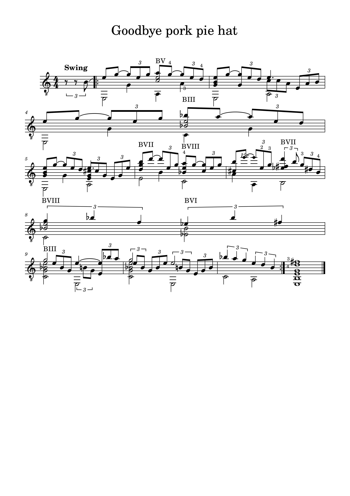

Goodbye pork pie hat - Mingus
Balada de jazz emblemática, adaptada a la guitarra solista conservando su lirismo y atmósfera melancólica
Los arreglos que comparto aquí están pensados para guitarristas solistas y para ensambles de guitarras.
Vas a encontrar videos con interpretaciones, las partituras disponibles y una breve descripción de cada obra.
El objetivo? Ofrecer materiales accesibles, musicales y de calidad tanto para el estudio individual como para el trabajo en grupo.
Balada de jazz emblemática, adaptada a la guitarra solista conservando su lirismo y atmósfera melancólica

Canción popular que evoca la tradición celta con un carácter nostálgico y melódico
Tema clásico del folk británico, de aire urbano y sentimental, muy versionado a lo largo de los años
Adaptación para conjunto de guitarras de uno de los hits más icónicos de la música pop-funk moderna.
Versión para ensamble de la célebre sonata, resaltando su atmósfera intensa y contemplativa.
Adaptación para ensamble de guitarras de la obra del gran pianista de jazz, marcada por su rítmica irregular y su energía característica.